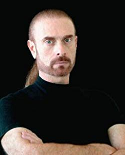

Issu du livre l'épée de vérité, de Terry Goodkind, les Rahl sont une ancienne lignée de sorciers qui règnent sur le monde. Après mon 20 ème anniversaire une révélation m'ai soudainement apparu, j’étais un Rahl.
Ayant reçu une partie de leur héritage le devoir qui incombe à tous sorciers pèse sur mes épaules, guider les égarés et protéger les terres du milieu s'avérer être plus redoutable que prévu.
Pour réaliser ce défi j'ai à mes côtés Keloumak-squad dont leur support va être crucial pour l'accomplissement de ma mission.
Richard Cypher est un modeste garde forestier ordinaire qui vit en Terre d'Ouest. Pour lui comme pour tous les autres habitants de cette région, le monde s'arrête à la Frontière, barrière infranchissable et terrifiante. Mais un jour, son chemin croise celui d'une étrange femme traquée du nom de Kalhan, se prétendant originaire des Contrées du Milieu, de l'autre côté de la Frontière. En lui sauvant la vie, il s'implique sans le vouloir dans une histoire qui le dépasse : la Frontière s'affaiblit et le Seigneur de D'Hara veut profiter de cette opportunité pour conquérir les Contrées du Milieu et soumettre le monde. Avec l'aide de Kahlan et du Sorcier de Premier Ordre Zeddicus Zul' Zorander (qu'il connaissait depuis toujours comme un vieil original plein de bonté et de ressources), qui s'était exilé en Terre D'Ouest des années auparavant, Richard, nommé Sourcier de Vérité, va devoir se lancer dans une quête dont dépendra le sort de l'humanité, brandissant au poing l'Épée de Vérité, arme magique et puissante, symbole de son statut.
Terry Goodkind, né en 1948 à Omaha dans le Nebraska, est un romancier américain contemporain. Il est connu pour son cycle de L'Épée de vérité qui s'est vendu à plus de vingt millions d'exemplaires dans le monde. Les œuvres de Terry Goodkind sont fortement influencées par la philosophie objectiviste d'Ayn Rand
